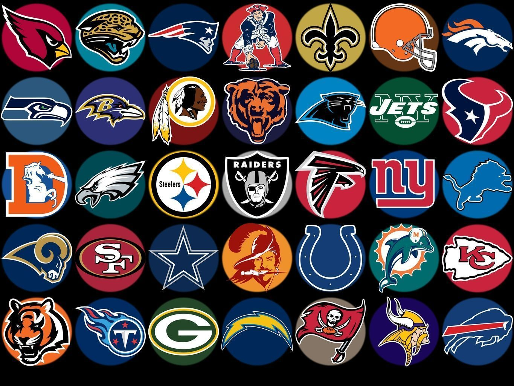

In this data project, I aimed to shed light on the injuries that NBA players are subject to and their recovery times. To achieve this, I conducted extensive research to gather relevant data and used Python to web-scrape this data from multiple sources. The data was then imported into a MySQL database where I performed extensive cleaning and manipulation to ensure its accuracy and integrity. The final step was to import this cleaned data into Tableau, where I created an interactive dashboard that provides deep insights into the injury rates and recovery times of specific NBA players. The dashboard features multiple visualizations and intuitive navigation, making it easy for users to understand and explore the data.

In this data project, I sought to gather and analyze NFL player statistics from the previous season to aid in preparing for the upcoming fantasy season. I employed Python to web-scrape statistics from multiple sources and then imported them into Microsoft SQL Server. In the SQL Server, I performed data cleaning and manipulation to ensure accuracy and integrity of the data. After that, I imported the cleaned data into Tableau to create interactive dashboards for each position group, allowing for in-depth analysis of the data. The dashboards were designed with the fantasy player in mind, providing all the necessary statistics to make informed decisions during draft preparation. The end result of this project is an intuitive and visually appealing set of dashboards that provides valuable insights into the performance of NFL players, enabling more informed decisions during the fantasy football season.


Tableau Dashboards for projects on COVID 19, Fantasy Football, and more!

In this project we look at what variables effect the gross revenue from movies.

In this project we use SQL Server to explore global COVID 19 data.

Here are projects that were completed during Codecademy Data Analyst skills path.
In this project we are visualizing Netflix stock data to help financial analysts asses the risk of the Netflix Stock.

In this project we scrape data from Amazon to analyze price data for products.

In this project we take raw housing data and transform
it in SQL Server to make it more usable for analysis.

In this project we create a script to automatically take data from a crypto API to analyze and visualize each tokens percent change over time